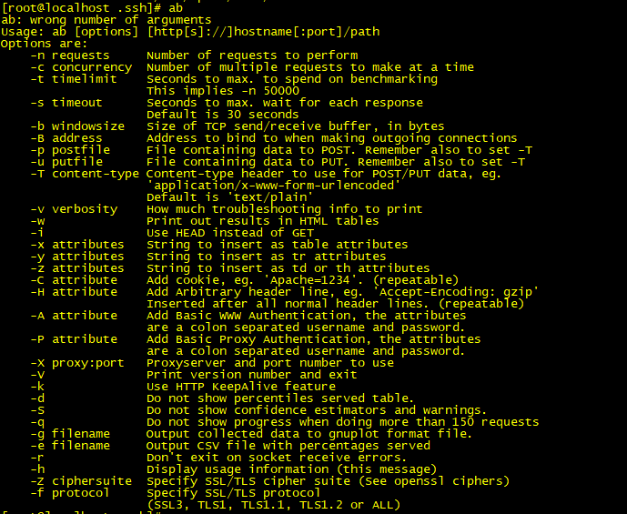
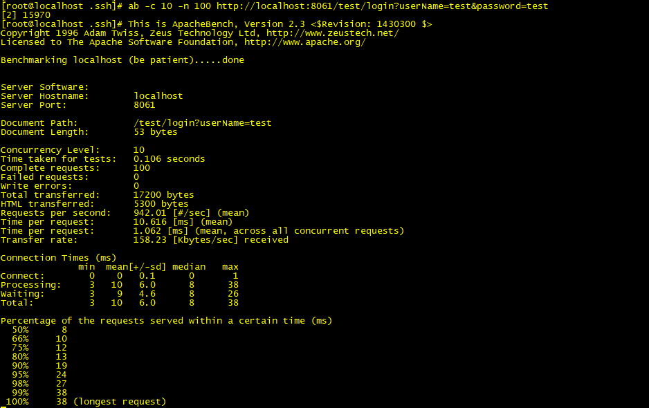
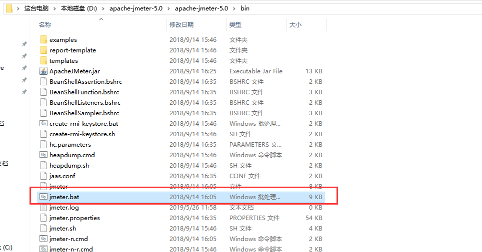
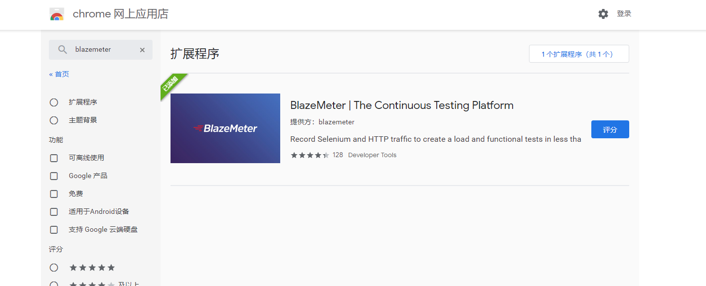
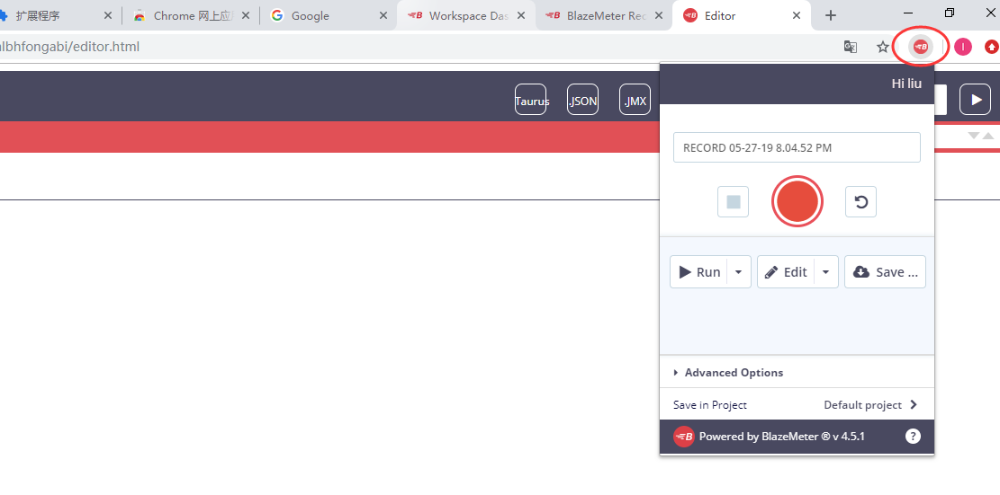
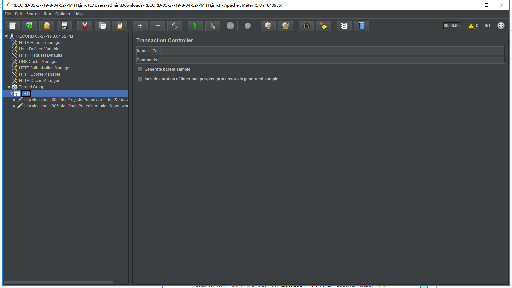
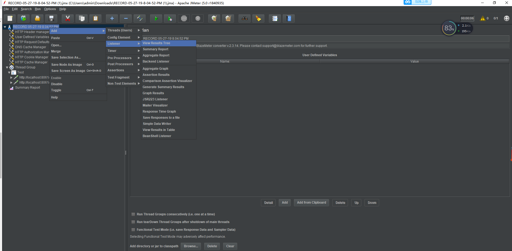
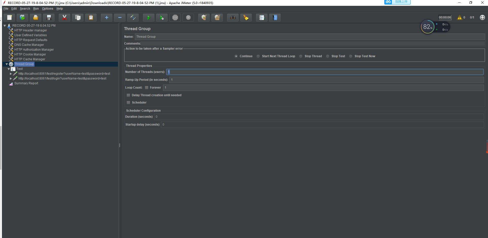
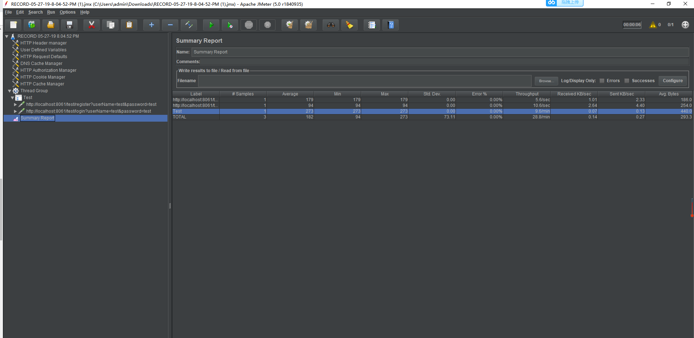
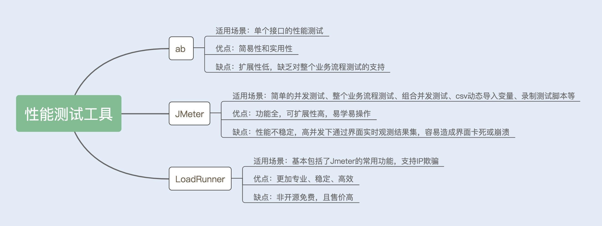

- 00 开篇词你为什么需要学习并发编程？.md
- 01 如何制定性能调优标准？.md
- 02 如何制定性能调优策略？.md
- 03 字符串性能优化不容小觑，百M内存轻松存储几十G数据.md
- 04 慎重使用正则表达式.md
- 05 ArrayList还是LinkedList？使用不当性能差千倍.md
- 06 Stream如何提高遍历集合效率？.md
- 07 深入浅出HashMap的设计与优化.md
- 08 网络通信优化之IO模型：如何解决高并发下IO瓶颈？.md
- 09 网络通信优化之序列化：避免使用Java序列化.md
- 10 网络通信优化之通信协议：如何优化RPC网络通信？.md
- 11 答疑课堂：深入了解NIO的优化实现原理.md
- 12 多线程之锁优化（上）：深入了解Synchronized同步锁的优化方法.md
- 13 多线程之锁优化（中）：深入了解Lock同步锁的优化方法.md
- 14 多线程之锁优化（下）：使用乐观锁优化并行操作.md
- 15 多线程调优（上）：哪些操作导致了上下文切换？.md
- 16 多线程调优（下）：如何优化多线程上下文切换？.md
- 17 并发容器的使用：识别不同场景下最优容器.md
- 18 如何设置线程池大小？.md
- 19 如何用协程来优化多线程业务？.md
- 20 磨刀不误砍柴工：欲知JVM调优先了解JVM内存模型.md
- 21 深入JVM即时编译器JIT，优化Java编译.md
- 22 如何优化垃圾回收机制？.md
- 23 如何优化JVM内存分配？.md
- 24 内存持续上升，我该如何排查问题？.md
- 25 答疑课堂：模块四热点问题解答.md
- 26 单例模式：如何创建单一对象优化系统性能？.md
- 27 原型模式与享元模式：提升系统性能的利器.md
- 28 如何使用设计模式优化并发编程？.md
- 29 生产者消费者模式：电商库存设计优化.md
- 30 装饰器模式：如何优化电商系统中复杂的商品价格策略？.md
- 31 答疑课堂：模块五思考题集锦.md
- 32 MySQL调优之SQL语句：如何写出高性能SQL语句？.md
- 33 MySQL调优之事务：高并发场景下的数据库事务调优.md
- 34 MySQL调优之索引：索引的失效与优化.md
- 35 记一次线上SQL死锁事故：如何避免死锁？.md
- 36 什么时候需要分表分库？.md
- 37 电商系统表设计优化案例分析.md
- 38 数据库参数设置优化，失之毫厘差之千里.md
- 39 答疑课堂：MySQL中InnoDB的知识点串讲.md
- 41 如何设计更优的分布式锁？.md
- 42 电商系统的分布式事务调优.md
- 43 如何使用缓存优化系统性能？.md
- 44 记一次双十一抢购性能瓶颈调优.md
- 加餐 什么是数据的强、弱一致性？.md
- 加餐 推荐几款常用的性能测试工具.md
- 答疑课堂：模块三热点问题解答.md
- 结束语 栉风沐雨，砥砺前行！.md
加餐 推荐几款常用的性能测试工具
你好，我是刘超。很多同学给我留言想让我讲讲工具，所以我的第一篇加餐就光速来了～
熟练掌握一款性能测试工具，是我们必备的一项技能。他不仅可以帮助我们模拟测试场景（包括并发、复杂的组合场景），还能将测试结果转化成数据或图形，帮助我们更直观地了解系统性能。
常用的性能测试工具
常用的性能测试工具有很多，在这里我将列举几个比较实用的。
对于开发人员来说，首选是一些开源免费的性能（压力）测试软件，例如 ab（ApacheBench）、JMeter 等；对于专业的测试团队来说，付费版的 LoadRunner 是首选。当然，也有很多公司是自行开发了一套量身定做的性能测试软件，优点是定制化强，缺点则是通用性差。
接下来，我会为你重点介绍 ab 和 JMeter 两款测试工具的特点以及常规的使用方法。
1.ab
ab 测试工具是 Apache 提供的一款测试工具，具有简单易上手的特点，在测试 Web 服务时非常实用。
ab 可以在 Windows 系统中使用，也可以在 Linux 系统中使用。这里我说下在 Linux 系统中的安装方法，非常简单，只需要在 Linux 系统中输入 yum-y install httpd-tools 命令，就可以了。
安装成功后，输入 ab 命令，可以看到以下提示：

ab 工具用来测试 post get 接口请求非常便捷，可以通过参数指定请求数、并发数、请求参数等。例如，一个测试并发用户数为 10、请求数量为 100 的的 post 请求输入如下：
ab -n 100 -c 10 -p 'post.txt' -T 'application/x-www-form-urlencoded' 'http://test.api.com/test/register'
post.txt 为存放 post 参数的文档，存储格式如下：
usernanme=test&password=test&sex=1
附上几个常用参数的含义：
- -n：总请求次数（最小默认为 1）；
- -c：并发次数（最小默认为 1 且不能大于总请求次数，例如：10 个请求，10 个并发，实际就是 1 人请求 1 次）；
- -p：post 参数文档路径（-p 和 -T 参数要配合使用）；
- -T：header 头内容类型（此处切记是大写英文字母 T）。
当我们测试一个 get 请求接口时，可以直接在链接的后面带上请求的参数：
ab -c 10 -n 100 http://www.test.api.com/test/login?userName=test&password=test
输出结果如下：

以上输出中，有几项性能指标可以提供给你参考使用：
- Requests per second：吞吐率，指某个并发用户数下单位时间内处理的请求数；
- Time per request：上面的是用户平均请求等待时间，指处理完成所有请求数所花费的时间 /（总请求数 / 并发用户数）；
- Time per request：下面的是服务器平均请求处理时间，指处理完成所有请求数所花费的时间 / 总请求数；
- Percentage of the requests served within a certain time：每秒请求时间分布情况，指在整个请求中，每个请求的时间长度的分布情况，例如有 50% 的请求响应在 8ms 内，66% 的请求响应在 10ms 内，说明有 16% 的请求在 8ms~10ms 之间。
2.JMeter
JMeter 是 Apache 提供的一款功能性比较全的性能测试工具，同样可以在 Windows 和 Linux 环境下安装使用。
JMeter 在 Windows 环境下使用了图形界面，可以通过图形界面来编写测试用例，具有易学和易操作的特点。
JMeter 不仅可以实现简单的并发性能测试，还可以实现复杂的宏基准测试。我们可以通过录制脚本的方式，在 JMeter 实现整个业务流程的测试。JMeter 也支持通过 csv 文件导入参数变量，实现用多样化的参数测试系统性能。
Windows 下的 JMeter 安装非常简单，在官网下载安装包，解压后即可使用。如果你需要打开图形化界面，那就进入到 bin 目录下，找到 jmeter.bat 文件，双击运行该文件就可以了。

JMeter 的功能非常全面，我在这里简单介绍下如何录制测试脚本，并使用 JMeter 测试业务的性能。
录制 JMeter 脚本的方法有很多，一种是使用 Jmeter 自身的代理录制，另一种是使用 Badboy 这款软件录制，还有一种是我下面要讲的，通过安装浏览器插件的方式实现脚本的录制，这种方式非常简单，不用做任何设置。
首先我们安装一个录制测试脚本的插件，叫做 BlazeMeter 插件。你可以在 Chrome 应用商店中找到它，然后点击安装， 如图所示：

然后使用谷歌账号登录这款插件，如果不登录，我们将无法生成 JMeter 文件，安装以及登录成功后的界面如下图所示：

最后点击开始，就可以录制脚本了。录制成功后，点击保存为 JMX 文件，我们就可以通过 JMeter 打开这个文件，看到录制的脚本了，如下图所示：

这个时候，我们还需要创建一个查看结果树，用来可视化查看运行的性能结果集合：

设置好结果树之后，我们可以对线程组的并发用户数以及循环调用次数进行设置：

设置成功之后，点击运行，我们可以看到运行的结果：

JMeter 的测试结果与 ab 的测试结果的指标参数差不多，这里我就不再重复讲解了。
3.LoadRunner
LoadRunner 是一款商业版的测试工具，并且 License 的售价不低。
作为一款专业的性能测试工具，LoadRunner 在性能压测时，表现得非常稳定和高效。相比 JMeter，LoadRunner 可以模拟出不同的内网 IP 地址，通过分配不同的 IP 地址给测试的用户，模拟真实环境下的用户。这里我就不展开详述了。
总结
三种常用的性能测试工具就介绍完了，最后我把今天的主要内容为你总结了一张图。

现在测试工具非常多，包括阿里云的 PTS 测试工具也很好用，但每款测试工具其实都有自己的优缺点。个人建议，还是在熟练掌握其中一款测试工具的前提下，再去探索其他测试工具的使用方法会更好。